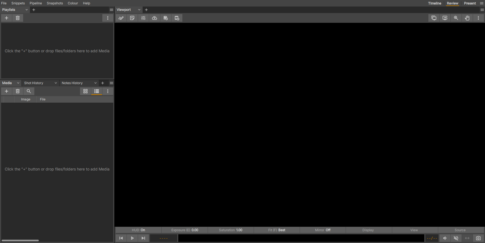

Getting Started
Building xSTUDIO
xSTUDIOのビルド方法に関する手順については、包括的なbuild guide documentationに従ってください。
Launching xSTUDIO
これはxSTUDIOをどのようにインストールしたかによって多少異なりますが、一般的にxSTUDIOを起動する方法は以下の通りです：
- Linux
ほとんどのLinuxデスクトップ環境では、空のxSTUDIO「セッション(Session)」を起動するために、Linuxのコマンドラインで
xstudioと入力してEnterキーを押します。 なお、すでにxstudioが実行されている場合、単に「xstudio」コマンドを実行しても新しいxstudioインターフェースは起動せず、既存のインスタンスと通信します。これがxSTUDIOの高速なメディア「プッシュ(push)」読み込みの仕組みです。確実に新しいxSTUDIOのGUIセッションを起動したい場合は、コマンドラインオプション「-n」を追加して、xstudio -nを実行します。
- Windows
WindowsへのxSTUDIOのインストールにより、Windowsのスタートメニューにショートカットが追加されるはずです。
- MacOS
xSTUDIOはMacOS上ではアプリケーションバンドルとして配置されているため、他の多くのアプリアプリケーションと同様に、アプリケーションアイコンをダブルクリックするだけで起動できます。

Loading Media (built-in browser)
バージョン1.3(MacおよびLinuxのみ - Windows版もまもなく対応予定)以降、xSTUDIOには高速で使いやすい内蔵ファイルシステムブラウザが搭載されました。これにより、ローカルディスクやネットワークドライブからメディアをスキャンし、xSTUDIOセッションにインポートする作業が非常に便利になります。この機能の全容については、こちらをクリックしてください。
ファイルシステムブラウザからドラッグ＆ドロップできるデスティネーション(インポート先)は3つあります：
プレイリスト(Playlists)パネルの空きスペース：新しいプレイリストが作成され、メディアが追加されます。 - xSTUDIOにドロップした最上位フォルダのサブフォルダは、サブセット(subset)として作成されます。
プレイリストパネル内の既存のプレイリスト項目：ファイルをドロップした対象のプレイリストにメディアが追加されます。
メディアリスト(Media List)パネル：メディアリストで現在確認しているプレイリストの末尾にメディアが追加されます。
Loading Media (filesystem browser)
メディアを読み込む簡単な方法は、ファイルシステムからメインウィンドウへファイルやフォルダをドラッグ＆ドロップすることです。フォルダをドロップした場合、そのディレクトリ内が再帰的に検索され、見つかったすべてのメディアファイルが追加されます。
ファイルシステムブラウザからドラッグ＆ドロップできるデスティネーション(インポート先)は3つあります：
プレイリスト(Playlists)パネルの空きスペース：新しいプレイリストが作成され、メディアが追加されます。 - xSTUDIOにドロップした最上位フォルダのサブフォルダは、サブセット(subset)として作成されます。
プレイリストパネル内の既存のプレイリスト項目：ファイルをドロップした対象のプレイリストにメディアが追加されます。
メディアリスト(Media List)パネル：メディアリストで現在確認しているプレイリストの末尾にメディアが追加されます。
Loading Media (command line)
ターミナルウィンドウからxSTUDIOのコマンドラインを使用してメディアを読み込むこともできます。これはShellの構文に慣れているユーザーにとって便利で強力な方法です。デフォルトでは、すでにxSTUDIOが実行されている場合、新しいセッションを起動するのではなく、既存のセッションにファイルが追加されます。新しいセッションを起動したい場合は、-nフラグを使用してください。
xSTUDIOは、シーケンスを読み込むためのさまざまなモードをサポートしています。必要に応じて異なるモードを組み合わせることができます。
xstudio /path/to/test.mov /path/to/\*.jpg /path/to/frames.####.exr=1-10 /path/to/other_frames.####.exr
Windowsでのコマンドは以下のようになりますが、Powershellでシンプルなコマンドエイリアス (別名)を使用することで、これを簡略化できます。
C:\Program Files\xSTUDIO\bin\xstudio.exe C:\Users\JaneSmith\\Media\test_movie.mp4 C:\Users\JaneSmith\Media\exrs\exr_sequence.####.exr
あるいは、MacOSではxSTUDIOアプリバンドルへのパスが必要になります。それはおそらく以下のようになります
/Applications/xSTUDIO.app/Contents/MacOS/xstudio.bin /Users/joe/Downloads/imported_media
特定のフレームのサブセットのみを読み込むことも、範囲を省略してパターンに一致するすべてのフレームを読み込むことも可能です。
Note
ファイルパスではなくファイルシステムのディレクトリを渡した場合、そのディレクトリ内が再帰的に検索され、xSTUDIOに読み込み可能なメディアがすべて抽出されます。
Note
動画ファイルは、そのファイルが持つ「本来の（ナチュラルな）」フレームレートで再生されます。つまり、xSTUDIOは指定されたファイルにエンコードされているフレームレートを尊重して適用します。
Note
連番画像 (例：一連のJPEGやEXRファイルなど) は、デフォルトで24fpsに設定されます (この設定は環境設定で変更可能です)。
コマンドラインでの読み込みに関する詳細については、Appendix Pt.1を参照してください。
Viewing Media
xSTUDIOのメディアリスト (Media List) パネルにドラッグ＆ドロップすると、ドロップされた最初の項目がすぐに画面に表示されます。現在のプレイリスト内にある他のメディアを確認するには、上下の矢印キーを使用してプレイリスト内の項目を順に切り替えます。表示するメディアを選択するその他の方法については、「メディアリストパネル (The Media List Panel)」のセクションを参照してください。プレイリストパネルにドラッグ＆ドロップした場合は、メディアはすぐにはビューポートに読み込まれません。新しく作成されたプレイリストをダブルクリックして、そのコンテンツをビューポートに表示させる必要があります。
Note
メディアリストパネルには、選択されている (selected) プレイリストのコンテンツが表示されます。選択されているプレイリスト は、ビューアに画像を表示している 閲覧中の (viewed) プレイリストとは異なる場合があることに注意してください。
プレイリストを選択するには、プレイリストパネルでそのプレイリストをシングルクリックします。プレイリストを選択すると同時にそのコンテンツの閲覧を開始するには、プレイリストパネルでプレイリストをダブルクリックします。
選択されているプレイリストが閲覧中のプレイリストと同じである場合は、メディアリストパネル内のメディア項目をシングルクリックするだけで、ビューアに表示され、再生やループが開始されます。上下の矢印のホットキーも、プレイリスト内で閲覧中のメディアを順に切り替える簡単な方法です。
選択されているプレイリストが閲覧中のプレイリストではない場合、メディアリスト内の項目をダブルクリックすると、閲覧中のプレイリストが選択したものに切り替わり、クリックしたメディアの再生が始まります。
Creating a Sequence (Timeline)
マルチトラック編集を作成するには、まずプレイリスト (Playlist) が必要です。なぜなら、シーケンス (Sequence) はプレイリストの子としてしか存在できないからです (詳細は Media Listを参照)。プレイリストを選択した状態で右クリックするか、「詳細」ボタン (プレイリストパネルの右上にある3つの点) を押して 新規シーケンス (New Sequence) を選択することで作成できます。
シーケンスが作成されたら、親プレイリストからドラッグ＆ドロップするか、プレイリストパネルでシーケンスを選択した状態でメディアリスト (Media List) に直接新しいメディアをドラッグ＆ドロップすることで、メディアを追加できます。
Note
メディアをシーケンスに読み込んでも、必ずしも編集に含まれるとは限りません。このように、シーケンスは実際の編集内容を保持するだけでなく、それ自体が メディアビン (media bin) として機能します。シーケンスに読み込まれたメディアはメディアリストパネルに表示され、そこからタイムラインインターフェースへドラッグ＆ドロップすることで、ビデオトラックやオーディオトラックに追加したり、新しいトラックを作成したりできます。
この短い動画は、シーケンスの作成手順を示しています。